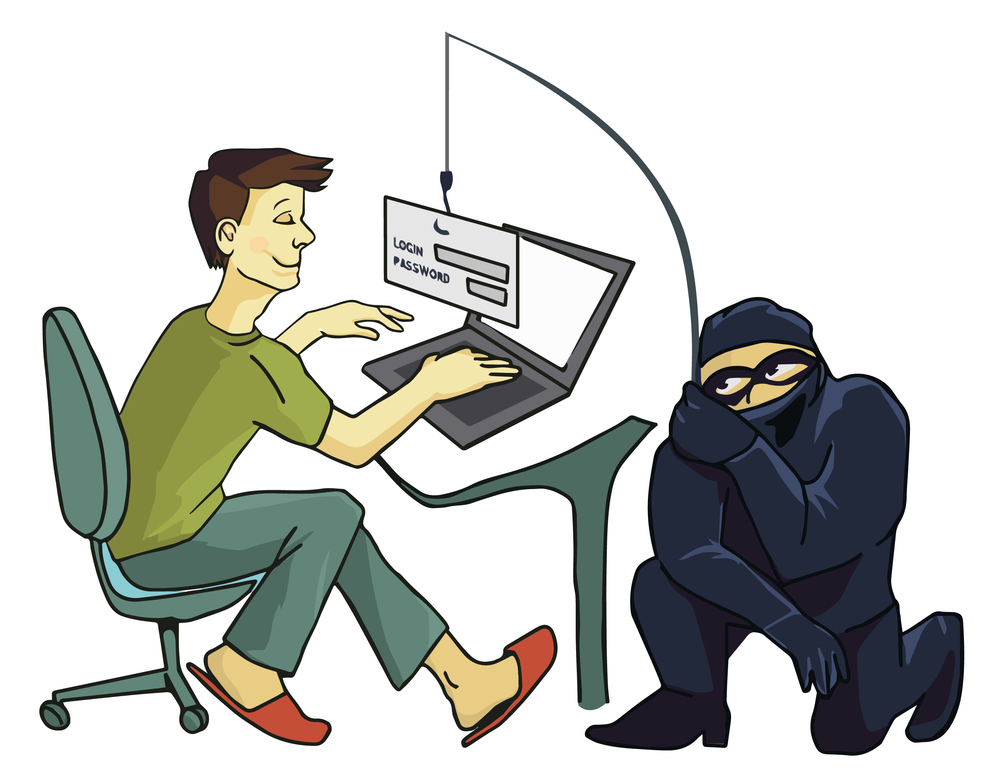

Le Phishing (fishing) ou hameçonnage en français
Les risques :
A priori, les victimes du phishing ne risquent pas grand-chose. Car si le « phishé » peut voir son compte en banque vidé en quelques minutes, il devrait pouvoir récupérer son argent sous bref délai. La banque a en effet l’obligation légale d’indemniser immédiatement la victime de l’arnaque à hauteur de ses pertes, à condition que cette dernière ait agi au plus tard dans les treize mois suivant la date du débit.
Comment se protéger ?
- -Prenez l'habitude de visiter le site de votre banque en tapant vous-même l'adresse qui figure sur le papier à entête de vos relevés de compte par exemple :
- -Si vous avez un doute sur un e-mail aux couleurs de votre banque, le plus simple est de ne pas suivre le lien contenu dans le message, mais d'aller dans votre espace client selon la méthode indiquée. Généralement, les banques étant conscientes de l'existence du phishing, elles n'écrivent jamais à leurs clients en leur donnant un lien à suivre pour se connecter à leur site.
- -Signaler immédiatement à votre banque, tout email suspect, même si vous n'avez pas la certitude qu'il s'agit d'un mail de phishing.
Site réalisé par Petit Samuel et Nathan Mas